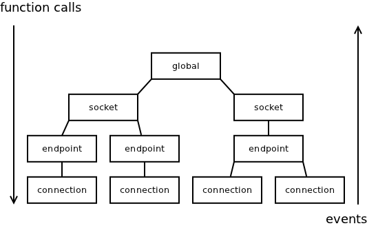

In my previous blog post I've described the problems with callback-based architectures and hinted that the solution may be replacing the callbacks by events and state machines. In this post I would like to discuss the proposed solution in more detail. Specifically, I am going to define what the events and state machines actually are and explain why they are useful.
While the article may be used as an intro to nanomsg's internal architecture it can be also be though of as an opinion piece of possible interest to anybody dealing with event-driven architectures and/or state machines.
First, let's define the very notion of an "event".
In classic object-oriented paradigm "event" translates directly to "message". Here's what Wikipedia says: "In OOP, each object is capable of receiving messages, processing data, and sending messages to other objects."
However, when you look at actual implementation of object-oriented languages like C++ or Java, "messages" are implemented as "methods", which in the end turn out to be classic function calls.
So, it seems that events are actually function calls and replacing callbacks (= function calls) by events (= function calls) makes no sense. Obviously, there's some kind of terminological mess here.
In reality, of course, events are not exactly the same as function calls, but in majority of cases they behave in the same way so it's hard to tell the difference. To sort it out, let's illustrate the difference using an example.
Imagine method foo() of object A calling method bar() of object B. Object B in turn calls method baz() of object A. It's a classic example of a callback. The sequence diagram for the scenario looks like this:
The obvious ploblem here is that A::baz() is executed while A::foo() is still in progress. What it means is that, on one hand A::baz() may be executed while object A is in inconsistent state (keep in mind that just half of A::foo() have been executed so far!) and on the other hand, state of A changes mysteriosly under the feet of A::foo() while it calls B::bar().
Events, in contrast, are executed in sequential manner. Next event is processed only after first one was fully processed. The sequence diagram for the same scenario would thus look like this:
Technically, instead of calling a function there's an event enqueued. The main event loop processes any events in the event queue in one-by-one manner.
As can be seen the problem encountered previously doesn't happen any more.
For those who haven't used event-driven model yet, it may look somewhat hard to implement. However, the implementation is pretty straightforward. Here's a sample code in C++:
struct event
{
void (*fn) (void *self);
void *self;
};
queue <event> events;
void event_loop ()
{
while (!events.empty ()) {
events.front ().fn (events.front ().self);
events.pop ();
}
}
void raise (event e)
{
events.push (e);
}
A small technical footnote for implementers of event-driven systems in C: Storing enqueued events in an intrusive containers (queues) seems to be a good idea, especially when doing low-level programming. Put aside the fact that it's extremely fast, intrusive containers enforce that no event is enqueued twice in parallel. That in turn means that there's no way to overflow the event queue — the number of events in the queue is strictly limited by the amount of business objects at hand. It's kind of similar to keeping the stack size limited in kernel-level programming.
All the above being said, if you are working with a language where events are not natively supported, turning all the function calls into events is an overkill. Especially, storing all the arguments when event is raised to be retrieved when it is being processed tends to be pretty annoying.
What turned out to be a pretty good solution in nanomsg is arranging all the objects into an ownership tree and using functions when moving from root to leaves and events when moving from leaves to the root:

The solution has two nice features:
As several readers have noted, events alone are sufficient to solve the callback problem and there's no actual need for full-blown state machines. The question thus is why to use state machines at all.
First, let's define what we mean by state machine. The "state machines" in computer engineering are not "finite state machines" of automata theory. Forget about Turing-incompleteness of finite state machines or their handiness for implementing regular expressions and tokenisers.
When we refer to state machines we mean objects with small part of their state (typically a single enum) singled out and referred to as the state:
As can be seen, nothing changes from the technical point of view. What really happens is that the developer decides what part of the object is going to be the state and communicates that in a formal manner (by naming the member 'state'), so that any other developer can check the code and understand which member is supposed to be the state.
Singling out the state has nothing to do with automata theory or even with computer science per se. Rather, it has to do with psychology of programming. And given that most developers are not accustomed to think in terms of psychology, let me give a couple of short warm-up examples.
Think of object-oriented programming. There's no technical reason to split the application into a set of discrete objects. After all, classic procedural programming works no worse that OO programing. The reason why OO programming is preferred is that human brain thinks in terms of objects and manipulating objects, not in terms of object-less actions. By re-arranging a program into objects — which, in reality, means just singling out "this" parameter in a function call — the whole program suddenly becomes much easier to grasp intuitively.
As an analogy, think of human sense of sight. The AI research made it clear that what initially looked like a relatively simple sense actually involves extremely sophisticated, albeit unconscious, computing machinery inside the brain. Using sight we are able to immediately and effortlessly spot minor details that we would have extremely hard time to notice if we were presented with the binary format of the same picture.
The point to take from the analogy is that human ability to deal with certain tasks varies by whole orders of magnitude depending on the presentation of the problem (e.g. picture vs. binary dump of the bitmap). In the case of OO programming we take advantage of the fact that we are very good at manipulating objects. The machinery for that is hard-wired into the brain and we can use it automatically, without thinking about it, or even noticing that any work was done.
But let's get back to the state machines now. Is there a similar unconscious mechanism in play there?
Well, it turns out that human brain is extremely good at grasping narratives (stories) and fares relatively poor at dealing with almost anything else. The fact is widely acknowledged in social sciences. To give a current example, press deals pretty well with reporting the story (a narrative) of Edward Snowden fleeing American government, but doesn't do nearly as well with reporting the immensely more important fact (not a narrative) of global surveillance. The audience readily absorbs the story but becomes distracted and even disinterested when presented with abstract facts about inner working of NSA.
That being said, the state machines are an instrument for turning abstract processing mechanisms (objects) into narratives.
All you have to do is to draw all the possible states as boxes and connect them by arrows representing valid state transitions. Let's have a look at the TCP protocol state machine, for example:
If you start with the CLOSED state and follow the arrows you can generate life stories (narratives) of different TCP endpoints. Do that for two minutes and you'll get an good idea of how TCP endpoint works.
Now imagine that instead of the abstracted state machine you would be presented with the full state of a TCP endpoint (including all the RTOs, CWNDs etc.) and the algorithms to manipulate that state. Because of the missing narrative structure, you would have a very hard time to figure out what's going on.
To throw in a bit of personal experience, I've done some coding with events alone, with no explicit state machines. It turned out to be very hard to get it right. When thinking about it in the retrospect the problem wasn't caused, interestingly, by the lack of a narrative. Rather, it was the fact that human brain is so good at generating narratives that new short-lived narratives popped into my head all the time. And with no set formally-defined narrative to rely on, they were often mutually incompatible, even contradictory, which in turn led to confusion and incoherent, buggy code.
While it is possible to use events without state machines (as already discussed) or state machines without events (using standard methods instead of events to drive the state machine) the combination of the two results in an extremely powerfull tool for implementing asynchronous systems. In the next blog post I would like to dive into technicalities of such implementation, including topics such as structuring of the code, handling of arguments and return values, nested state machines et c.
August 1st, 2013